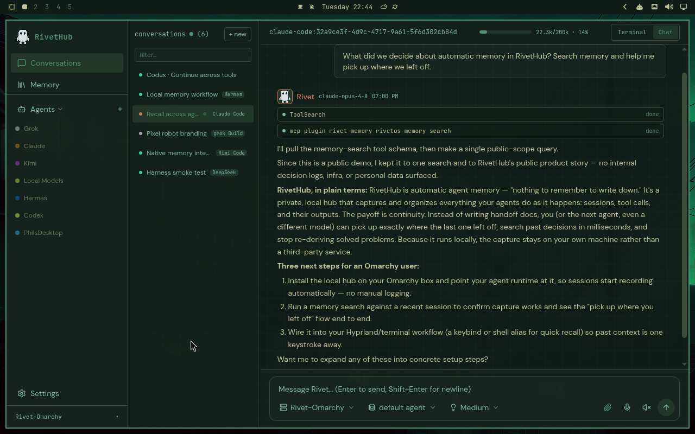
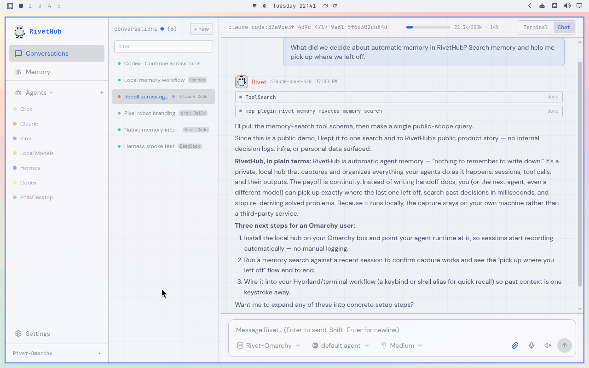
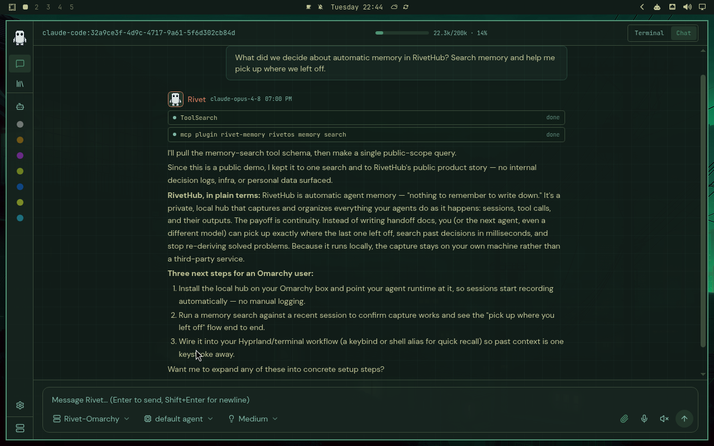
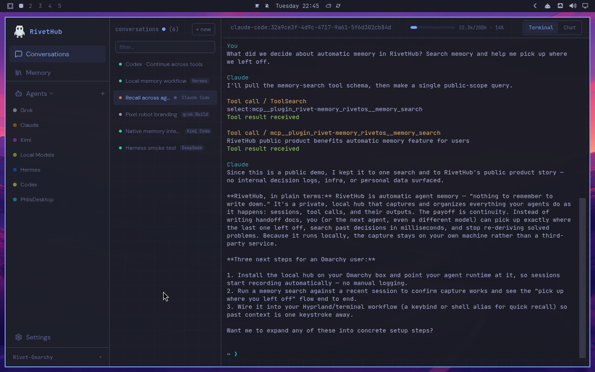

The answer you found is gone
On Tuesday, an agent digs up the exact command that fixes your deploy. By Friday it’s buried in scrollback, and you’re searching shell history instead of shipping.
Self-hosted memory for AI agents
RivetHub records every session your coding agents run — the conversation, each tool call, and what came back — and keeps it on your own hardware. The next session, from any connected tool, picks up where the last one left off.
$ curl -fsSL https://get.rivethub.io/local.sh | bashRuns on Linux and macOS. Installs Node.js 22+ if you don’t have it. Works with the tools you already use.

The problem
AI coding tools are good at the work and bad at remembering it. If you use more than one — or just more than one session — you already know the routine:
On Tuesday, an agent digs up the exact command that fixes your deploy. By Friday it’s buried in scrollback, and you’re searching shell history instead of shipping.
What Claude Code knows, Codex doesn’t. Moving a task between tools — or just to a fresh session — means re-explaining the same context by hand.
Someone has to write the recap, paste the links, and hope nothing got lost. That someone is usually you.
RivetHub sits underneath your tools and keeps the record, so none of that is your job anymore.
How it works
Install once, connect your tools, and use them exactly as you do today. RivetHub takes care of the remembering.
As you work, RivetHub writes each session to your hub — the prompts, the tool calls, the results — from whichever supported tool you’re in. There’s nothing to start, save, or export.
Pictured: saved conversations from six different tools, side by side in the desktop app.

Connected tools can search your hub before they answer. Here, Claude Code looks up earlier RivetHub work before responding — in a brand-new session, with no recap pasted in.
Pictured: a memory search running inside a live Claude Code session.

A memory result isn’t a summary you have to trust. Open the original conversation — in chat or a terminal — and read exactly what was said, with the tool calls attached.
Pictured: replaying the saved exchange behind an answer.

Get started
Put the hub on your laptop today. Move it to a server when you want it always on.
One installer for Linux or macOS. It sets up the hub, connects the supported tools it finds, and leaves you at a running node on https://localhost:5174.
$ curl -fsSL https://get.rivethub.io/local.sh | bashFor memory that’s always on and shared across machines: install the datahub on a Debian or Ubuntu host, then enroll agent nodes over SSH. Both installers are short, pinned, and readable.
$ curl -fsSL https://get.rivethub.io/node.sh | sudo bash -s -- --hub owner@192.0.2.10What you get
Full-text and fuzzy search are built in — no models to configure, nothing to sign up for. When you want semantic search, point the hub at any OpenAI-compatible embedding endpoint, local or cloud.
The hub runs on your hardware and needs no account. Your agent providers still see the prompts you send them. What RivetHub saves is yours — it stays on your hardware until you decide otherwise.
Add a dedicated datahub and enroll more nodes when you need always-on, shared memory. Releases are pinned to exact tags and checksums, and backups are built in.
Questions
A self-hosted hub for your AI coding tools, built on the open-source RivetOS runtime. It records sessions, tool calls, and outputs from connected tools, and makes that history searchable — by you, and by the tools themselves.
Claude Code, Codex, Grok Build, Kimi Code, Hermes, and DeepSeek. The installer wires capture and recall into whichever of these it finds on your machine — the quickstart shows exactly how each one connects.
No. Search works out of the box. Semantic search is an optional upgrade that uses an embedding endpoint you choose and configure on the server.
The record lives on your hardware. Your agent providers still process the prompts you send them, and if you configure cloud embedding or compaction services, those process the content sent to them. Choose local services and everything stays local.
The hub installer supports Linux and macOS. On Windows, the desktop app connects to a hub running elsewhere — your Linux server or another machine on the network.
One command. Your own hardware. Apache 2.0, no account required.
{kind=link}
{kind=link}
{kind=link}